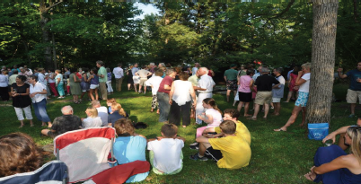

As we make our way through sometimes snowy and cold days in places near and far from Eagles Mere, we know that brighter and warmer months are ahead, and that this special community will gather again to welcome spring and summer to the moun- tain. For that we are thankful. And in this edition of the Eagles Mere Conservancy Newsletter, we give special thanks to those who have helped preserve this community over the years. Inside you will and articles remembering both Carter Buller and Bob Coniff, and their unique contributions to the EMC. These memorial pieces are a reminder of how Eagles Mere is about both the place and the people.
And there is much more to read about in the following pages. Many of you joined us for music, food and drinks in the Dell last July, and Cece Estey King has new information for us as we get ready for the Second Annual “Friend Raiser” coming back to the Dell site on July 18th. Suzanne Lee and Kevin Gardner provide develop- ment and financial details; and be sure to check out the new schedule of events which our educators and committee folks have been working on throughout the off-season. Enjoy these other great articles filled with information:
• Updates on forest stewardship from Steve Jaquith • History of Conservancy trails from Ruth Rode • Unique ora and fauna from Irene Safren • Highlights from the sunset Hardly Able tour from Vivian Williams • Maggie Testa’s favorite ways to enjoy nature
Finally, we are also thankful for the efforts of Jenny Coniff, Robin Sheedy, and Beth and Sydney Borges for their great work in organizing and publishing our news- letter in time for the events ahead, along with the important contributions of every member of your EMC board.
Be sure to take advantage of the events and activities to come, and please mark your calendar for the annual meeting on August 10, 2014. As always, please remem- ber that all of this is possible through your generous giving to the Eagles Mere Con- servancy, in both time and funds. Let’s keep a bright future for the natural land of Eagles Mere and its preservation. See you on the mountain.
Andy Rau, EMC President
Support the EMC

2015 Newsletter
Cabin Programs

To Reach the Conservancy:
Telephone:
Cabin: 570-525-3725
Office: 570-525-3385
Email:
info@eaglesmereconservancy.org
Cabin Hours:
Monday-Saturday: 9:30am-4:00pm
Sunday: Closed
Event Calendar